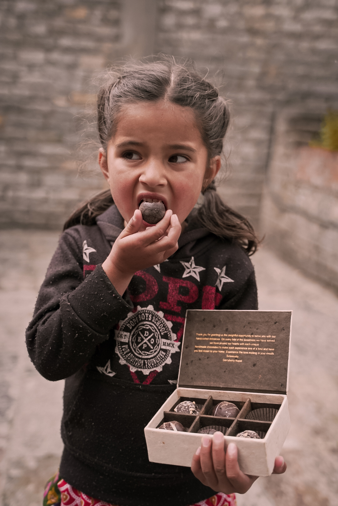
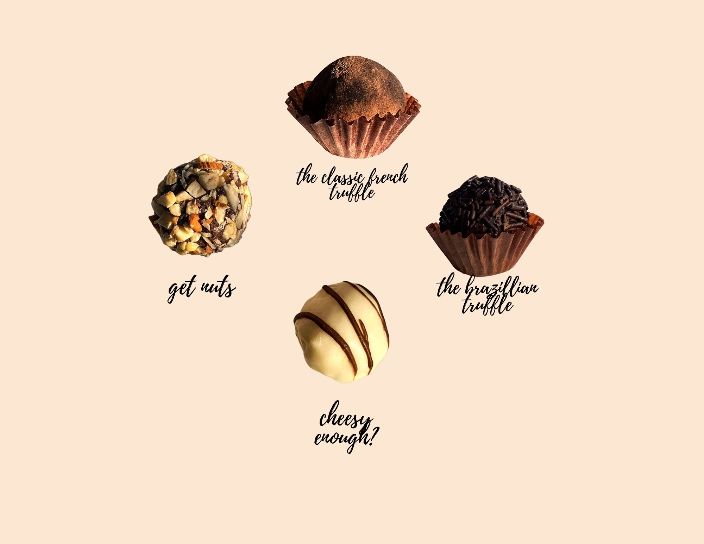

.jpg)
Gerryberry Nepal: How I Built a Chocolate Company at 19
The Idea
It was January 2019 when the concept of handmade and homemade chocolates turned into action. The chocolate idea started with the thought of giving Nepalese people the taste of ginger in their chocolates. Yes, ginger! A home remedy for almost every flu and something so rich in antioxidants. Along with ginger, strawberry-infused chocolates were introduced. In these chocolates, we didn't add artificial flavors; we added real dried strawberries and ginger that were bought, cleaned, and dried in our own home. Thus, Gerryberry was created—"Gerry" from ginger and "berry" from strawberry. The idea of ginger and strawberry in chocolates was so loved by all our customers that they wanted to try it "feri feri" (again and again), which became our tagline.
Starting Out
Gerryberry started soon after social media was crying out over seeing a turtle struggling for its life because of a plastic straw stuck inside its nose. Walking through the streets of Kathmandu filled with non-biodegradable plastic wrappers bothered us deeply as individuals. So, our intention was to provide plastic-free chocolate packaging. We wanted to give our customers, as well as ourselves, a guilt-free chocolate experience. We started off by packaging the chocolates in recycled paper with Nepali paper tags.

Growing Through COVID
However, in 2021, we thought of giving the chocolates a luxury twist. We introduced different truffle boxes along with an assorted box featuring four distinct truffles. The truffles are made with fresh cream, condensed milk, and cream cheese prepared by our own hands. After experimenting for months before launching the handmade truffle range, we finally perfected four beautiful varieties. The taste of the truffles was inspired by original chocolate truffles—unchanged, just as truffles should be.

Going International
Soon after that, word of mouth went global, and we started exporting chocolates internationally! I delivered 500 pieces of truffles to Mumbai, which was one of our biggest wins. Ultimately, we grew to satisfy hundreds of happy customers with our truffles and brought a unique, beautiful chocolate experience to our town and beyond. All of this happened amidst my ongoing Bachelor's degree in an entirely different subject. Despite my success, I knew it was time to take a break to focus on my graduation and academics.
What I Learned
Gerryberry was an integral part of my learning journey and personal growth. I learned a lot about business analytics, business development, and customer satisfaction—skills that are relevant in every type of business. I am proud of what Gerryberry achieved and everything I learned about the challenges behind running a business, from ideation to operations, marketing, and legal aspects. I still intend to continue what I built, probably after I turn 40, because right now, I am focused on my career as a cartographer.